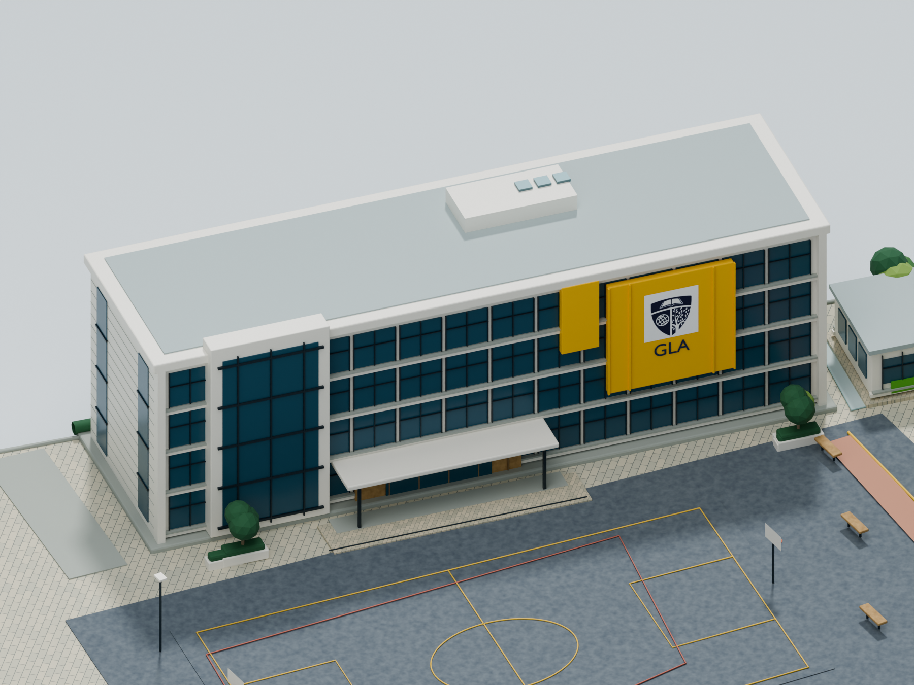
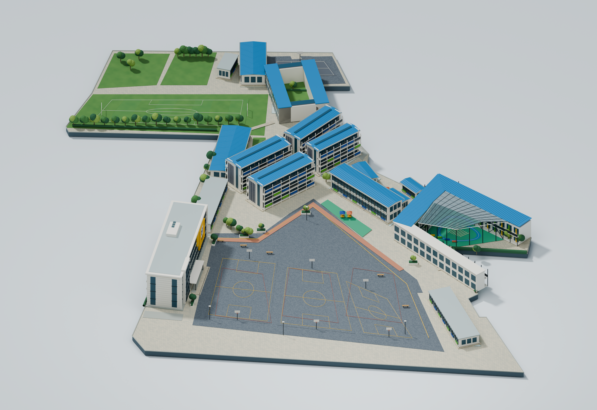
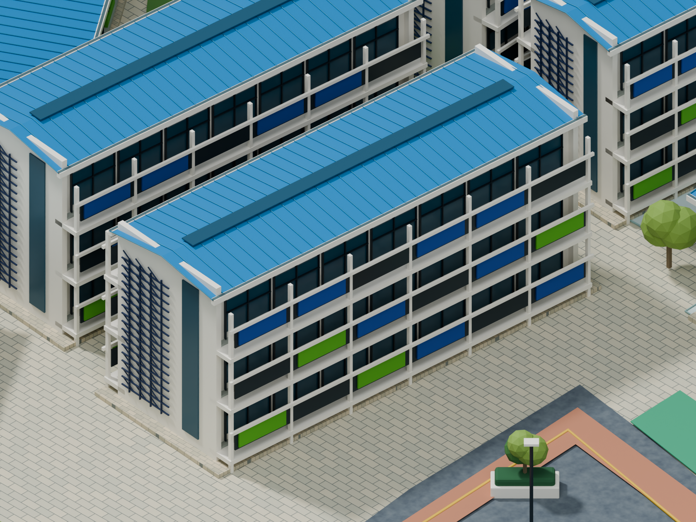
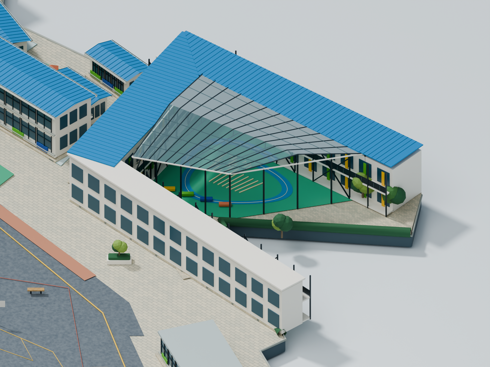

01 · REGIÓN 4:37
Administrativo
La fachada amarilla, los paños de vidrio y la composición blanca como rasgos de identidad.
Revisar a tamaño completo ↗Una segunda revisión del escenario isométrico. El foco está en reconocer el colegio, leer sus zonas y evaluar la calidad visual antes de avanzar.
Desliza para comparar el conjunto sin cambiar la cámara general.


Mueve el control a la derecha para descubrir la primera versión y a la izquierda para ver la actualización completa. También puedes usar las flechas del teclado.
Tres vistas para revisar fachadas, cubiertas, proporciones y materiales.

La fachada amarilla, los paños de vidrio y la composición blanca como rasgos de identidad.
Revisar a tamaño completo ↗
Cubierta azul, corredores y ritmo de ventanas dentro del conjunto de los cuatro bloques.
Revisar a tamaño completo ↗
La planta irregular, las alas de cubierta azul y la estructura del espacio acristalado.
Revisar a tamaño completo ↗Relaciona la escena con las zonas del plano de referencia.
Las identificaciones sirven para revisar la distribución. No representan selección de espacios ni funciones del aplicativo.
Frame 2:2 · Mapa corregido. Ubicación de grado 11 y GYM según el plano, con dimensiones y proporciones todavía aproximadas.
Reconocer el colegio en los edificios y en su distribución. Valorar la lectura de pisos, canchas, senderos y vegetación, junto con el contraste y la sensación de escenario isométrico.
Fotografía aérea, imágenes aportadas, plano corregido y recorrido virtual del colegio. Esta reconstrucción es interpretativa y no tiene escala arquitectónica comprobada.
El prototipo se genera con Python en Blender. La primera entrega queda conservada para comparar; los archivos actuales corresponden a esta revisión visual.
 01 · Administrativo anterior ↗
01 · Administrativo anterior ↗ 02 · Salones anterior ↗
02 · Salones anterior ↗ 03 · Preescolar anterior ↗
03 · Preescolar anterior ↗